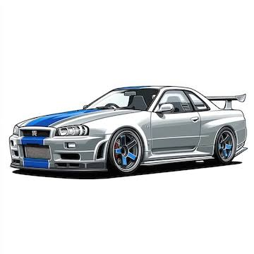

Desempenho
As versões esportivas do Skyline ficaram conhecidas pelo desempenho e pela participação em competições.
ARQUIVO DE CARROS • NISSAN SKYLINE
Conheça a história do Nissan Skyline, um dos carros japoneses mais conhecidos entre os fãs de automobilismo.

O Skyline passou por várias gerações e ganhou destaque pelas suas versões esportivas e pelo seu visual marcante.
As versões esportivas do Skyline ficaram conhecidas pelo desempenho e pela participação em competições.
O Skyline se tornou um dos carros japoneses mais conhecidos no mundo.
Existem várias gerações do Skyline, cada uma com mudanças no visual e na mecânica.
Explore alguns modelos e gerações do Nissan Skyline.